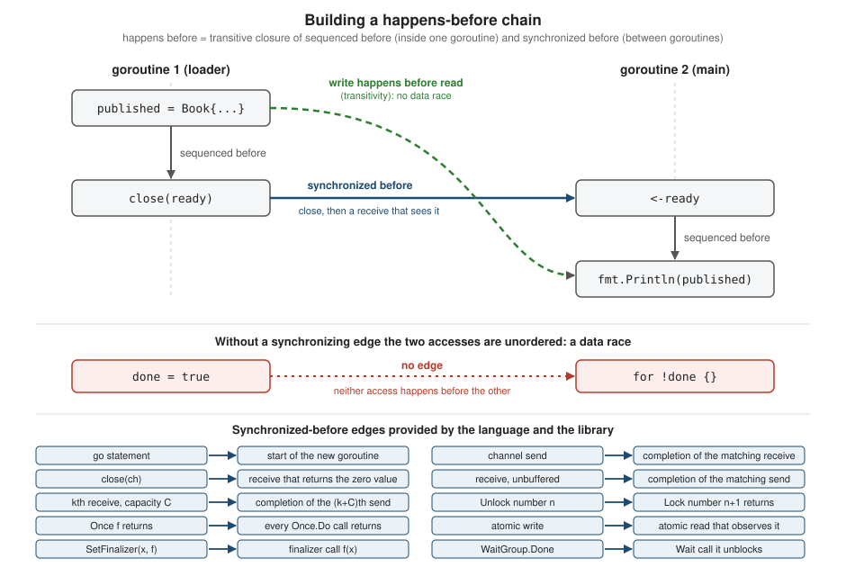

Memory Model and Data Races
|
This content was generated with the assistance of AI and should be verified against the official documentation before being relied on in production. |
This page is written against Go 1.27 (go1.27.2), checked on 2026-10-18; every go.mod shown has the line go 1.27.
The memory model answers one question: when is a read of a variable in one goroutine guaranteed to observe a value
written by another goroutine? The answer is a partial order called happens before, built from the order of
statements inside each goroutine and from a short list of synchronization operations (channel operations, locks,
sync.Once, atomics and a few more). A program with no unordered conflicting accesses, a program without data
races, behaves as if its goroutines were interleaved on a single processor. This page explains the model, lists every
synchronization edge the language and library provide, states what Go still promises when a program does have a race,
and describes the race detector, the tool that finds such races at run time.
It builds on Goroutines and the Scheduler,
Channels and Select and
Sync and Atomics, which describe the primitives themselves;
Concurrency Patterns shows how to compose them.
For the other side of the comparison see the Rust Reference page
Threads and message passing, where the compiler
rejects data races statically, and the C Reference,
C Reference, where a data race is undefined behavior.
Every example was compiled, vetted with go vet and run with Go 1.27.2; the output shown is the real output. The
race reports were produced with go run -race and are trimmed only in their file paths (GORACE=strip_path_prefix=
removes the scratch directory, and $GOROOT stands for the Go installation); the goroutine numbers, addresses and
the order of the two reports can differ between runs. Programs that contain a race are nondeterministic by nature, so
for those the page shows the race report, which is the deterministic part, rather than the program’s ordinary output.
The reports are indented by two spaces here; the detector prints them flush left.
The go.mod of the example module is:
module example.com/shelf
go 1.27Why a memory model
Modern compilers and CPUs reorder, combine and cache memory accesses. Inside one goroutine all of that is invisible,
because the result must be as if the statements ran in order. Between goroutines it is not: without a rule, one
goroutine could see another’s writes in a different order, or never see them. A language therefore has to say which
guarantees programs can rely on. Go says so in The Go Memory Model (the version of
June 6, 2022, the revision released with Go 1.19), which follows the approach of Boehm and Adve’s work on the C
memory model. The key property is *DRF-SC*: a data-race-free program can only have outcomes that some sequentially
consistent interleaving of its goroutines explains. That is the same guarantee C, C, Java, JavaScript, Rust and
Swift give, and it is why the model’s own advice
(Advice) is short: protect shared data with channel operations or the primitives of
sync and sync/atomic, and if you have to read the rest of the document to understand your program, you are being
too clever.
Go differs from C and C++ in what happens to a program that does contain a race. Those languages make the meaning of such a program undefined. Go bounds the damage (see What Go guarantees for programs with races), but still insists that races are errors and that tools can diagnose them.
The vocabulary
The formal part of the model (Memory Model) describes a program execution as a set of goroutine executions made of memory operations. Each operation has a kind, a location and a value. Some operations are synchronizing: atomic accesses, mutex operations and channel operations. Plain reads and writes of variables are ordinary (non-synchronizing) data accesses.
| Term | Meaning |
|---|---|
sequenced before |
The order inside one goroutine that the language specification fixes for control flow and for the evaluation of expressions. It is a partial order: the model does not order operations the specification leaves unordered. |
synchronized before |
A partial order on synchronizing operations. If a synchronizing read-like operation |
happens before |
The transitive closure of sequenced before and synchronized before. This is the relation programmers reason with. |
visible write |
A write |
data race |
A write to a memory location happening concurrently with another read or write of the same location, unless all accesses involved are atomic. Formally: a read-like and a write-like operation on the same location, at least one of them non-synchronizing, that are unordered by happens before; or two such write-like operations. |
DRF-SC |
"Data-race-free programs execute in a sequentially consistent manner": if no execution has a race, every outcome is explained by some interleaving. |
A memory location here is a variable, a struct field or an array or slice element: distinct fields and distinct
elements are distinct locations, which is why writing copies[i] from different goroutines is not a race (see
Typical races). The informal overview
(Informal Overview) is the part of the document that "should suffice for most programmers".
The following sequence diagram shows one happens-before edge through a channel. The write to published is sequenced
before close(ready), the close is synchronized before the receive that returns because the channel is closed, and the
receive is sequenced before the read. By transitivity the write happens before the read, so the read is guaranteed to
see the book.
The same edge in code:
package main
import "fmt"
type Book struct {
ISBN string
Title string
}
var (
published Book
ready = make(chan struct{})
)
func loader() {
published = Book{ISBN: "9780134190440", Title: "The Go Programming Language"} // (1) write
close(ready) // (2) close
}
func main() {
go loader()
<-ready // (3) receive that returns because the channel is closed
fmt.Println(published) // (4) read
}{9780134190440 The Go Programming Language}The figure summarizes the construction and lists every synchronized-before edge covered in the next section.

Synchronization points
The section Synchronization of the memory model lists the operations that create
synchronized-before edges. Packages are responsible for documenting the guarantees of their own operations in the same
terms; sync and sync/atomic do.
| From (write-like) | To (read-like) | Where defined |
|---|---|---|
Completion of every |
Start of any |
Model, Initialization |
The |
Start of the new goroutine’s execution |
Model, Goroutine creation |
Exit of a goroutine |
Nothing: no guarantee at all |
Model, Goroutine destruction |
Send on a channel |
Completion of the matching receive |
Model, Channel communication |
|
A receive that returns a zero value because the channel is closed |
same |
Receive from an unbuffered channel |
Completion of the matching send |
same |
The kth receive on a channel of capacity C |
Completion of the (k+C)th send |
same |
Call n of |
Return of call m of |
Model, Locks |
Completion of the single |
Return of any |
Model, Once |
An atomic operation A |
An atomic operation B that observes the effect of A |
Model, Atomic Values |
|
The finalization call |
Model, Finalizers |
|
Return of any |
The sections below show each edge in a runnable program.
Initialization
Program initialization runs in a single goroutine, but init functions and package-level variable initializers may start
other goroutines, which then run concurrently with the rest of initialization. If package p imports package q,
the completion of q's init functions happens before the start of any of p's; the completion of all init functions
is synchronized before main.main. The order of initialization itself is covered in
Packages, Imports and Initialization.
The practical consequence is that a package-level variable written only during initialization may be read from main
and from goroutines started by main without any further synchronization.
Goroutine creation and exit
The go statement is synchronized before the start of the goroutine, so everything written before the statement is
visible inside the new goroutine. The converse is not true: the exit of a goroutine is not synchronized before any
event. A goroutine’s effects become visible to another goroutine only through some synchronization the goroutine
performs, here a sync.WaitGroup.
package main
import (
"fmt"
"sync"
)
var title string
func main() {
// Goroutine creation: the go statement is synchronized before the
// goroutine starts, so the write below is visible to it.
title = "Learning Go"
var wg sync.WaitGroup
wg.Add(1)
var seen string
go func() {
defer wg.Done()
seen = title
}()
// WaitGroup.Done is synchronized before the Wait that it unblocks, so
// reading seen after Wait is race free.
wg.Wait()
fmt.Println("goroutine saw:", seen)
}goroutine saw: Learning GoOmitting the wait is the classic mistake. Here the second goroutine reads what the first one wrote, but nothing orders them, because the first goroutine simply ends:
package main
import "fmt"
var result string
func main() {
done := make(chan struct{})
go func() {
result = "indexed"
// No synchronization event follows this write: the exit of a
// goroutine is not synchronized before anything.
}()
go func() {
defer close(done)
fmt.Println("worker reads:", result)
}()
<-done
}The race detector reports it (the program itself may print an empty string or indexed, which is the point):
worker reads: indexed
==================
WARNING: DATA RACE
Read at 0x00010072fa10 by goroutine 8:
main.main.func2()
main.go:16 +0x94
Previous write at 0x00010072fa10 by goroutine 7:
main.main.func1()
main.go:10 +0x28
Goroutine 8 (running) created at:
main.main()
main.go:14 +0x9c
Goroutine 7 (finished) created at:
main.main()
main.go:9 +0x3c
==================
Found 1 data race(s)
exit status 66The memory model adds that "an aggressive compiler might delete the entire go statement" when nothing observes its
effect. If another goroutine must see the effects, use a lock, a channel, a WaitGroup or an atomic.
Channels
Channel communication is the main synchronization mechanism. The model states four rules:
-
a send on a channel is synchronized before the completion of the corresponding receive;
-
the closing of a channel is synchronized before a receive that returns a zero value because the channel is closed (the example above uses this form; replacing
c <- 0withclose(c)keeps the guarantee); -
a receive from an unbuffered channel is synchronized before the completion of the corresponding send;
-
the kth receive from a channel with capacity C is synchronized before the completion of the (k+C)th send.
The third rule is the one that surprises people, because it runs "backwards": on an unbuffered channel the receiver can
publish data to the sender. The write to a below is sequenced before the receive, so it is visible after the send
completes. With a buffered channel make(chan int, 1) the same program would carry no guarantee.
package main
import "fmt"
var (
c = make(chan int) // unbuffered
a string
)
func f() {
a = "hello, world"
<-c // the receive is synchronized before the completion of the send
}
func main() {
go f()
c <- 0
fmt.Println(a)
}hello, worldThe fourth rule generalizes the third (with C = 0 it is the unbuffered rule) and is what makes a buffered channel a
counting semaphore: sending acquires, receiving releases, the capacity is the maximum number of simultaneous holders.
The program below starts twelve goroutines but never lets more than three be inside the guarded section; the final line
is true on every run.
package main
import (
"fmt"
"sync"
"sync/atomic"
)
func main() {
limit := make(chan struct{}, 3) // capacity C = 3
var running, peak atomic.Int32
var wg sync.WaitGroup
for range 12 {
wg.Go(func() {
limit <- struct{}{} // acquire: the (k+3)th send waits for the kth receive
n := running.Add(1)
for {
p := peak.Load()
if n <= p || peak.CompareAndSwap(p, n) {
break
}
}
running.Add(-1)
<-limit // release
})
}
wg.Wait()
fmt.Println("peak concurrency <= 3:", peak.Load() <= 3)
}peak concurrency <= 3: trueA nil channel never synchronizes anything (operations on it block forever), and a select statement synchronizes
through whichever communication it actually performs. See Channels and Select
for the behavior table and Concurrency Patterns for the
done-channel and semaphore patterns built on these edges.
Locks
For any sync.Mutex or sync.RWMutex l and n < m, call n of l.Unlock() is synchronized before call m of l.Lock()
returns. For a sync.RWMutex, a call to RLock has an n such that call n of Unlock is synchronized before the return
of RLock, and the matching RUnlock is synchronized before the return of call n+1 of Lock: readers see everything
the previous writer did, and the next writer sees everything the readers did. The program below uses a mutex purely as
a hand-off: the second Lock in main cannot return until the goroutine has called Unlock.
package main
import (
"fmt"
"sync"
)
var (
mu sync.Mutex
entry string
)
func main() {
mu.Lock() // lock call 1 (held until the goroutine releases it)
go func() {
entry = "written before Unlock"
mu.Unlock() // unlock call 1
}()
mu.Lock() // lock call 2: returns only after unlock call 1
fmt.Println(entry)
mu.Unlock()
}Source: The Go Memory Model: Locks
written before UnlockA successful TryLock or TryRLock is equivalent to the corresponding Lock or RLock; an unsuccessful call has no
synchronizing effect at all, and for the purposes of the model it may return false even when the mutex is unlocked.
Unlocking an unlocked mutex is a fatal error. The sync package documentation spells out the same "synchronizes
before" wording for Mutex, RWMutex, Cond (a Broadcast or Signal call before the Wait it wakes), Pool (a
Put(x) before a Get returning x, and a New returning x before a Get returning it) and sync.Map (a write
before a read that observes it). The Mutex type is covered in
Sync and Atomics.
Once
The completion of the single call of f() made by once.Do(f) is synchronized before the return of every call of
once.Do(f). Every caller therefore sees everything f wrote, and f runs once however many goroutines race to call
Do. If f panics, Do considers it returned. sync.OnceFunc, sync.OnceValue and sync.OnceValues (Go 1.21) wrap
the same guarantee around a function.
package main
import (
"fmt"
"sync"
)
var (
once sync.Once
isbnList []string
)
func load() {
fmt.Println("load runs once")
isbnList = []string{"9780134190440", "9781492077213"}
}
func use(id int, wg *sync.WaitGroup, out []int) {
defer wg.Done()
once.Do(load)
out[id] = len(isbnList)
}
func main() {
var wg sync.WaitGroup
out := make([]int, 4)
for i := range out {
wg.Add(1)
go use(i, &wg, out)
}
wg.Wait()
fmt.Println(out)
// Go 1.21: OnceValue wraps the same guarantee around a function.
get := sync.OnceValue(func() int { return len(isbnList) * 10 })
fmt.Println(get(), get())
}Source: The Go Memory Model: Once
load runs once
[2 2 2 2]
20 20Atomic values
The operations of sync/atomic (the functions such as AddInt64 and the types atomic.Int64, atomic.Bool,
atomic.Pointer[T] and atomic.Value) are synchronizing operations: if the effect of atomic operation A is observed
by atomic operation B, then A is synchronized before B. All atomic operations behave as if executed in one sequentially
consistent order. This is the model of C `memory_order_seq_cst` and Java `volatile`, and it is all Go offers: the
Go 1.19 release notes say that Go "only provides sequentially consistent atomics, not any of the more relaxed forms".
Relaxed or acquire/release atomics, which C and Rust expose, do not exist in Go.
The edge works for ordinary data too. In the program below the plain write that fills the Config is sequenced before
current.Store, which is sequenced before ready.Store(true); the reader’s ready.Load() observes true, so the
earlier writes are visible. The loop spins on an atomic, not on a plain variable, which is why it is correct (compare the
busy wait in Incorrect synchronization).
package main
import (
"fmt"
"sync/atomic"
)
type Config struct {
Library string
Fine int
}
func main() {
var current atomic.Pointer[Config]
var ready atomic.Bool
done := make(chan struct{})
go func() {
defer close(done)
for !ready.Load() { // atomic load: not a data race
}
// ready.Store happened-before this Load observed true, so the
// Config written below is fully visible.
c := current.Load()
fmt.Println(c.Library, c.Fine)
}()
current.Store(&Config{Library: "Central", Fine: 25})
ready.Store(true)
<-done
}Central 25In real code prefer a channel, a WaitGroup or a sync.Cond to a spinning loop; the example only shows the edge.
The typed atomics (atomic.Int32, atomic.Int64, atomic.Uint32, atomic.Uint64, atomic.Uintptr, atomic.Bool,
atomic.Pointer[T]) arrived in Go 1.19 together with the memory-model revision; the Go 1.27 go fix command gains an
atomictypes modernizer that rewrites the old function style. The typed values also guarantee 64-bit alignment on 32-bit
platforms, which the function style does not. Mixing atomic and plain access to the same variable is still a data race,
and the race detector says so:
package main
import (
"fmt"
"sync"
"sync/atomic"
)
func main() {
var loans int64
var wg sync.WaitGroup
wg.Go(func() {
atomic.AddInt64(&loans, 1) // atomic access
})
wg.Go(func() {
loans++ // plain access to the same variable: still a data race
})
wg.Wait()
fmt.Println("done")
}Source: sync/atomic
done
==================
WARNING: DATA RACE
Write at 0x00c000114038 by goroutine 7:
??()
-:0 +0x1003ab6f0
sync/atomic.AddInt64()
<autogenerated>:1 +0x10
Previous write at 0x00c000114038 by goroutine 8:
main.main.func2()
main.go:16 +0x3c
Goroutine 7 (running) created at:
sync.(*WaitGroup).Go()
$GOROOT/src/sync/waitgroup.go:238 +0x6c
Goroutine 8 (finished) created at:
sync.(*WaitGroup).Go()
$GOROOT/src/sync/waitgroup.go:238 +0x6c
==================
Found 1 data race(s)
exit status 66The first stack frame of the atomic access is shown as ??() because the detector instruments the atomic wrapper rather
than the caller; the second access, the plain loans++, is what has to change.
Finalizers and cleanups
A call to runtime.SetFinalizer(x, f) is synchronized before the finalization call f(x). Whatever was written before
registering the finalizer is therefore visible inside it. The finalizer runs on a runtime goroutine at an unspecified
time after x becomes unreachable, and the program may exit before it runs, so the example below forces a collection
and waits on a channel with a timeout.
package main
import (
"fmt"
"runtime"
"time"
)
type Handle struct{ name string }
var closedBy string
func main() {
done := make(chan struct{})
h := &Handle{name: "scanner-1"}
closedBy = "finalizer saw: " + h.name // write before SetFinalizer
runtime.SetFinalizer(h, func(h *Handle) {
// SetFinalizer(x, f) is synchronized before f(x), so the write
// above is visible here without further synchronization.
fmt.Println(closedBy)
close(done)
})
h = nil
runtime.GC()
select {
case <-done:
case <-time.After(5 * time.Second):
fmt.Println("finalizer did not run")
}
}Source: runtime: SetFinalizer
finalizer saw: scanner-1The memory model documents only SetFinalizer. Go 1.24 added runtime.AddCleanup, the recommended replacement, and
the documentation of that function describes its own ordering; cleanups, weak pointers and the pitfalls of finalizers
are in Cleanups, Weak Pointers and Interning.
WaitGroup and other library edges
The sync.WaitGroup documentation states that a call to Done "synchronizes before" the return of any Wait call it
unblocks. The same holds for the function passed to WaitGroup.Go (Go 1.25), which calls Done when the function
returns; all the wg.Go examples on this page rely on it when reading results after wg.Wait(). Other synchronizing
library operations include context cancellation (the Done channel is closed), time timers (timer channels are
synchronous since Go 1.23), and the bubbles of testing/synctest (Go 1.25), where a bubble’s
goroutines are synchronized with each other deterministically; see
Benchmarks, Fuzzing and synctest. A package that
offers synchronization must document its guarantees; if it does not, do not assume one.
What Go guarantees for programs with races
The section Implementation Restrictions for Programs Containing Data Races defines the floor under a racy program. Compared with C and C++, where the compiler may do anything, Go promises the following.
-
Detection is allowed to stop the program. An implementation may always react to a race by reporting it and terminating. Builds using ThreadSanitizer (
go build -race) do exactly this whenhalt_on_erroris set. -
Single-word reads see a real value. A read of a memory location no larger than a machine word must observe some write that does not happen after the read and is not overwritten, in happens-before terms, before the read: a value written by a preceding or concurrent write. "Out of thin air" and acausal values are disallowed. Most races on an
intor a pointer therefore have a small set of outcomes (the old or the new value), not arbitrary ones. -
Larger values may tear. A read or write of an array, struct or complex number may be implemented as separate reads or writes of each element, field or component, in any order. Reads and writes of locations larger than one word are encouraged but not required to behave like word-sized ones.
-
Multiword headers can corrupt memory. Strings are a (pointer, length) pair, slices a (pointer, length, capacity) triple, interface values a (type, pointer) pair, and maps are implemented with internal pointers. A race that lets a reader see the pointer of one value together with the length or type of another can lead to arbitrary memory corruption, not only a wrong value. That is why a racy string, slice, interface or map must never be treated as "just a stale read".
The runtime adds its own checks. The built-in map implementation detects some concurrent misuse itself and, instead of corrupting memory, stops the program:
package main
import (
"fmt"
"sync"
)
func main() {
shelf := map[int]string{}
var wg sync.WaitGroup
for g := range 8 {
wg.Go(func() {
for i := range 10000 {
shelf[g*10000+i] = "copy"
}
})
}
wg.Wait()
fmt.Println(len(shelf))
}The output of running it without -race (the stack frames after the first line are trimmed, and it stopped with this error on every run here, but the runtime only makes a best-effort check, so a racy map program may also silently misbehave):
fatal error: concurrent map writes
goroutine 37 [running]:
internal/runtime/maps.fatal({0x100ba715b?, 0x0?})
$GOROOT/src/runtime/panic.go:1195 +0x20
main.main.func1()
main.go:14 +0x6c
sync.(*WaitGroup).Go.func1()
$GOROOT/src/sync/waitgroup.go:258 +0x48
created by sync.(*WaitGroup).Go in goroutine 1
$GOROOT/src/sync/waitgroup.go:238 +0x78
exit status 2This fatal error is not a panic: recover cannot catch it, and defer statements do not run. It is a
best-effort diagnostic, never a substitute for correct synchronization; the race detector below finds the same bug
(and the cases the runtime misses) deterministically.
The race detector
Go includes a built-in data race detector based on ThreadSanitizer. It instruments every memory access and every synchronization operation of the program, builds the happens-before relation as the program runs, and reports two accesses to the same location that are not ordered by it where at least one is a write. Because it works on the executed program, it finds races that happen in that run, not every race that could ever happen; every report names two accesses that the detector observed to be unordered by happens before, with at least one write.
Using it
Add -race to the go command:
go test -race ./... # test the packages
go run -race ./cmd/shelf
go build -race ./cmd/shelf
go install -race ./cmd/shelfSource: Data Race Detector: Usage
The binary built with -race records the setting, which is useful for confirming that a deployed binary is an instrumented
one:
go build -race -o x01 ./e01
go version -m x01 | grep -E 'race|CGO_ENABLED' build -race=true
build CGO_ENABLED=1Source: cmd/go: Print Go version
Anatomy of a report
The unsynchronized counter below is the smallest realistic race: four goroutines increment a plain field. The report’s structure is the same for every race.
package main
import (
"fmt"
"sync"
)
// Counter counts loans without any synchronization.
type Counter struct {
loans int
}
func (c *Counter) Lend() { c.loans++ }
func main() {
var c Counter
var wg sync.WaitGroup
for range 4 {
wg.Go(func() {
for range 1000 {
c.Lend()
}
})
}
wg.Wait()
fmt.Println("loans recorded:", c.loans)
} loans recorded: 4000
==================
WARNING: DATA RACE
Read at 0x00c00012e018 by goroutine 10:
main.(*Counter).Lend()
main.go:13 +0x40
main.main.func1()
main.go:21 +0x3c
Previous write at 0x00c00012e018 by goroutine 7:
main.(*Counter).Lend()
main.go:13 +0x50
main.main.func1()
main.go:21 +0x3c
Goroutine 10 (running) created at:
sync.(*WaitGroup).Go()
$GOROOT/src/sync/waitgroup.go:238 +0x6c
Goroutine 7 (finished) created at:
sync.(*WaitGroup).Go()
$GOROOT/src/sync/waitgroup.go:238 +0x6c
==================
==================
WARNING: DATA RACE
Write at 0x00c00012e018 by goroutine 10:
main.(*Counter).Lend()
main.go:13 +0x50
main.main.func1()
main.go:21 +0x3c
Previous write at 0x00c00012e018 by goroutine 9:
main.(*Counter).Lend()
main.go:13 +0x50
main.main.func1()
main.go:21 +0x3c
Goroutine 10 (running) created at:
sync.(*WaitGroup).Go()
$GOROOT/src/sync/waitgroup.go:238 +0x6c
Goroutine 9 (finished) created at:
sync.(*WaitGroup).Go()
$GOROOT/src/sync/waitgroup.go:238 +0x6c
==================
Found 2 data race(s)
exit status 66The program also printed loans recorded: 4000 here, and Found 1 data race(s) and exit status 66 came from the
detector. Without the detector the total can be lower than 4000 on another run, because the read-modify-write of
c.loans++ is not atomic. Reading the report:
| Part | Meaning |
|---|---|
|
The start of a report; one report per distinct pair of stack traces. |
|
The current access: its kind ( |
|
An earlier conflicting access to the same address that is not ordered with respect to the current one, with its own stack. It is "previous" in the detector’s observation order, not necessarily the order in time that matters. |
|
The stack of the |
|
Printed on exit; the exit status is 66 by default (the |
When the stack for the previous access cannot be reconstructed, the report says failed to restore the stack; raise
history_size in GORACE (see below) to keep a longer history.
The race detector also treats a race on a map as a race on the map’s internal state, which is why the report for an unprotected map names a runtime function, not the line that wrote the key:
package main
import (
"fmt"
"sync"
)
var shelf = map[string]int{}
func main() {
var wg sync.WaitGroup
for i := range 2 {
wg.Go(func() {
shelf[fmt.Sprint("copy", i)] = i // write to a shared map
})
}
wg.Wait()
fmt.Println(len(shelf))
} 2
==================
WARNING: DATA RACE
Write at 0x00c0001180f0 by goroutine 8:
runtime.mapaccess2_faststr()
$GOROOT/src/internal/runtime/maps/runtime_faststr.go:120 +0x2bc
main.main.func1()
main.go:14 +0xb0
Previous write at 0x00c0001180f0 by goroutine 7:
runtime.mapaccess2_faststr()
$GOROOT/src/internal/runtime/maps/runtime_faststr.go:120 +0x2bc
main.main.func1()
main.go:14 +0xb0
Goroutine 8 (running) created at:
sync.(*WaitGroup).Go()
$GOROOT/src/sync/waitgroup.go:238 +0x6c
Goroutine 7 (finished) created at:
sync.(*WaitGroup).Go()
$GOROOT/src/sync/waitgroup.go:238 +0x6c
==================
Found 1 data race(s)
exit status 66The line main.go:14 is the useful frame; the runtime frames above it are the map implementation (the map
implementation of Go 1.24 and later).
Fixing the race
Both of the usual fixes remove the race and are verified by -race as clean. The mutex guards the compound operation; the
atomic counter makes the single operation indivisible.
package main
import (
"fmt"
"sync"
"sync/atomic"
)
// SafeCounter protects loans with a mutex.
type SafeCounter struct {
mu sync.Mutex
loans int
}
func (c *SafeCounter) Lend() {
c.mu.Lock()
defer c.mu.Unlock()
c.loans++
}
func (c *SafeCounter) Loans() int {
c.mu.Lock()
defer c.mu.Unlock()
return c.loans
}
func main() {
var a SafeCounter
var b atomic.Int64
var wg sync.WaitGroup
for range 4 {
wg.Go(func() {
for range 1000 {
a.Lend()
b.Add(1)
}
})
}
wg.Wait()
fmt.Println("mutex:", a.Loans(), "atomic:", b.Load())
}Source: sync and sync/atomic
mutex: 4000 atomic: 4000go run -race printed no report. Choose a mutex when several fields must change together, an atomic when exactly one
word is involved, and a channel when ownership of the data moves between goroutines (the principle of "share memory by
communicating", see Concurrency Patterns). The go vet
copylocks analyzer catches one related mistake statically: copying a lock by value, which silently gives each copy its
own mutex.
package main
import (
"fmt"
"sync"
)
type SafeCounter struct {
mu sync.Mutex
loans int
}
// Report takes its receiver by value, which copies the mutex.
func (c SafeCounter) Report() string {
return fmt.Sprint("loans: ", c.loans)
}
func main() {
var c SafeCounter
fmt.Println(c.Report())
}Source: cmd/vet
main.go:14:9: Report passes lock by value: example.com/shelf/e27.SafeCounter contains sync.MutexVet cannot find races themselves, only some patterns that cause them; the race detector is the tool for that.
Options: GORACE
The GORACE environment variable sets race-detector options in the form GORACE="option1=val1 option2=val2".
| Option | Default | Effect |
|---|---|---|
|
|
Write reports to a file named |
|
|
Exit status used when exiting after a detected race. |
|
empty |
Strip this prefix from every reported file path to make reports shorter; this page uses it to remove the scratch directory. |
|
|
The per-goroutine access history has 32K times 2 to the power of |
|
|
Exit after the first reported race instead of continuing and printing more. |
|
|
Milliseconds the main goroutine sleeps before exiting, so racing goroutines still running can be reported. |
Source: Data Race Detector: Options
A CI job usually wants the first race to stop the run with a recognizable status. Running the counter above with
GORACE="halt_on_error=1 exitcode=77" prints one report and exits with status 77 (the go run wrapper reports it as
exit status 77):
go build -race -o x02 ./e02
GORACE="halt_on_error=1 exitcode=77 strip_path_prefix=$PWD/" ./x02; echo "exit=$?" ==================
WARNING: DATA RACE
Read at 0x00c000012148 by goroutine 10:
main.(*Counter).Lend()
main.go:13 +0x40
main.main.func1()
main.go:21 +0x3c
Previous write at 0x00c000012148 by goroutine 7:
main.(*Counter).Lend()
main.go:13 +0x50
main.main.func1()
main.go:21 +0x3c
Goroutine 10 (running) created at:
sync.(*WaitGroup).Go()
$GOROOT/src/sync/waitgroup.go:238 +0x6c
Goroutine 7 (running) created at:
sync.(*WaitGroup).Go()
$GOROOT/src/sync/waitgroup.go:238 +0x6c
==================
exit=77Source: Data Race Detector: Options
The race build tag and testing
When you build with -race, the go command defines the build tag race. Use it with //go:build race and
//go:build !race constraints to compile different files, for example to switch on extra assertions or to exclude a
test that is too slow or already known to race under the detector. The old // +build line is obsolete; the form of the
constraint is covered in
Directives, Code Generation and Embedding.
The two files below define one constant:
//go:build race
package main
const raceEnabled = trueSource: cmd/go: Build constraints
//go:build !race
package main
const raceEnabled = falseSource: cmd/go: Build constraints
package main
import "fmt"
func main() {
fmt.Println("race detector enabled:", raceEnabled)
}Source: cmd/go: Build constraints
Running it without and with the flag (go run ./e18 and go run -race ./e18):
race detector enabled: false
race detector enabled: trueThe most useful place for the detector is go test -race. The test below exercises a tally that is not safe for
concurrent use. Without -race the test passes (it did on every run here, which is precisely the problem: a race that
rarely corrupts anything goes unnoticed); with -race the test fails.
package loans
// Tally counts how many times each ISBN was lent.
type Tally struct {
counts map[string]int
}
func NewTally() *Tally { return &Tally{counts: map[string]int{}} }
// Lend records one loan. It is not safe for concurrent use.
func (t *Tally) Lend(isbn string) { t.counts[isbn]++ }
func (t *Tally) Count(isbn string) int { return t.counts[isbn] }Source: Data Race Detector
package loans
import (
"sync"
"testing"
)
func TestTallyConcurrent(t *testing.T) {
tally := NewTally()
var wg sync.WaitGroup
for range 2 {
wg.Go(func() {
tally.Lend("9780134190440")
})
}
wg.Wait()
if got := tally.Count("9780134190440"); got != 2 {
t.Errorf("Count = %d, want 2", got)
}
}Source: Data Race Detector: How to use
$ go test ./loans
ok example.com/shelf/loans 0.194s $ go test -race ./loans
==================
WARNING: DATA RACE
Read at 0x00c0000a0690 by goroutine 8:
runtime.mapaccess1_faststr()
$GOROOT/src/internal/runtime/maps/runtime_faststr.go:114 +0x4c
runtime.mapaccess1_faststr()
$GOROOT/src/internal/runtime/maps/runtime_faststr.go:115 +0x1c
Previous write at 0x00c0000a0690 by goroutine 9:
runtime.mapaccess2_faststr()
$GOROOT/src/internal/runtime/maps/runtime_faststr.go:120 +0x2bc
example.com/shelf/loans.(*Tally).Lend()
loans.go:11 +0x88
example.com/shelf/loans.TestTallyConcurrent.func1()
loans_test.go:13 +0x30
Goroutine 8 (running) created at:
sync.(*WaitGroup).Go()
$GOROOT/src/sync/waitgroup.go:238 +0x6c
testing.tRunner()
$GOROOT/src/testing/testing.go:2195 +0x164
testing.(*T).Run.gowrap1()
$GOROOT/src/testing/testing.go:2260 +0x34
Goroutine 9 (finished) created at:
sync.(*WaitGroup).Go()
$GOROOT/src/sync/waitgroup.go:238 +0x6c
testing.tRunner()
$GOROOT/src/testing/testing.go:2195 +0x164
testing.(*T).Run.gowrap1()
$GOROOT/src/testing/testing.go:2260 +0x34
==================
...
--- FAIL: TestTallyConcurrent (0.00s)
testing.go:1867: race detected during execution of test
FAIL
FAIL example.com/shelf/loans 0.088s
FAILgo test reports testing.go:...: race detected during execution of test and marks the test failed even though the
assertion in the test body held. Only one of the two reports the detector printed is shown above; the other concerns the
map read. Run the whole suite with -race in CI on a machine that has a C toolchain where required, and run the
instrumented binary under a realistic workload when the tests have incomplete coverage, because the detector only sees
code that runs. A benchmark or fuzz target run with -race is also instrumented
(Benchmarks, Fuzzing and synctest).
Platforms, requirements and overhead
The detector requires cgo to be enabled and, on non-Darwin systems, an installed C compiler. The documentation lists
the supported platforms: linux/amd64, linux/ppc64le, linux/arm64, linux/s390x, linux/loong64, freebsd/amd64, netbsd/amd64,
darwin/amd64, darwin/arm64 and windows/amd64. The release notes record the additions: s390x in Go 1.19, a macOS
implementation that does not use cgo in Go 1.20, loong64 in Go 1.25 and linux/riscv64 in Go 1.26. On this macOS machine a
CGO_ENABLED=0 go build -race succeeds (go version -m then reports CGO_ENABLED=0), while cross-compiling for
Linux without cgo is refused:
GOOS=linux GOARCH=amd64 CGO_ENABLED=0 go build -race -o /dev/null ./e01go: -race requires cgoSource: Data Race Detector: Requirements
The cost varies by program, but the documentation gives the typical figures: memory usage may grow by 5 to 10 times and
execution time by 2 to 20 times. In addition, the detector allocates an extra 8 bytes for every defer and recover
statement, and those allocations are not freed until the goroutine exits, so a long-lived goroutine that keeps using
defer and recover can make an instrumented program grow without bound (the memory is not visible in
runtime.ReadMemStats or runtime/pprof).
That is why the detector is for tests, staging and canary processes, not for production binaries. See also Profiling, Tracing and Diagnostics for other diagnostics.
What the detector cannot see
-
Code that did not run. A race in an unexecuted branch is invisible. Raise coverage, or run a
-racebuild under real load. -
Races that did not occur in this run. The detector uses the happens-before relation, so it finds potential races between accesses that ran in different goroutines even if the unlucky interleaving did not happen, but only for accesses that did run in that execution.
-
Logical races. Two properly locked operations can still interleave in a bad order (a check-then-act sequence split across two critical sections). The accesses are ordered, so there is no data race; the program is still wrong.
-
Deadlocks and leaks. These are different bugs; see Goroutines and the Scheduler.
-
Edges the detector cannot derive. The documentation’s example of send and close on the same channel from two goroutines is reported as a race because the two operations are unsynchronized; the fix is to receive before the close, as below.
package main
import "fmt"
func main() {
c := make(chan struct{}, 1) // or an unbuffered channel
go func() { c <- struct{}{} }()
<-c // the receive guarantees the send is finished
close(c)
fmt.Println("closed after the send completed")
}closed after the send completedTypical races
The race-detector article lists the shapes in which races usually appear. Each is shown here in the shelf scenario.
The shared loop variable
Before Go 1.22 the variable of a for clause was shared by all iterations, so goroutines started in the loop read the
value after the loop had moved on. In a module that declares go 1.22 or later every iteration has its own variable
and the copy idiom (v := v) is unnecessary; see
Control Flow. The race is still there whenever the variable is
declared outside the for statement, as below, which is also how the documentation’s example reproduces it in a Go 1.27
module:
package main
import (
"fmt"
"sync"
)
func main() {
var wg sync.WaitGroup
wg.Add(3)
var i int
for i = 0; i < 3; i++ {
go func() {
defer wg.Done()
_ = i // reads the shared loop variable
}()
}
wg.Wait()
fmt.Println("finished")
} WARNING: DATA RACE
Read at 0x00c000012148 by goroutine 7:
main.main.func1()
main.go:15 +0x68
Previous write at 0x00c000012148 by main goroutine:
main.main()
main.go:12 +0x94
Goroutine 7 (running) created at:
main.main()
main.go:13 +0x7c
==================
finished
Found 1 data race(s)
exit status 66An accidentally shared variable
A variable declared in the enclosing function and assigned with = inside a closure is shared with every other goroutine
that uses it. The two goroutines below both write the caller’s err; a := inside each closure gives each its own.
package main
import (
"fmt"
"strings"
)
// export writes the same title list to two destinations in parallel and
// returns the errors on a channel.
func export(titles string, a, b *strings.Builder) chan error {
res := make(chan error, 2)
_, err := a.WriteString(titles)
if err != nil {
res <- err
} else {
go func() {
// err is shared with the caller's goroutine: this write races
// with the write below.
_, err = a.WriteString("|done")
res <- err
}()
}
_, err = b.WriteString(titles) // second conflicting write to err
if err != nil {
res <- err
} else {
go func() {
_, err = b.WriteString("|done")
res <- err
}()
}
return res
}
func main() {
var a, b strings.Builder
res := export("Learning Go", &a, &b)
fmt.Println(<-res, <-res)
fmt.Println(a.String(), b.String())
} <nil> <nil>
Learning Go|done Learning Go|done
==================
WARNING: DATA RACE
Write at 0x00c00011a020 by goroutine 7:
main.export.func1()
main.go:19 +0x174
Previous write at 0x00c00011a020 by main goroutine:
main.export()
main.go:23 +0x400
main.main()
main.go:37 +0xb0
Goroutine 7 (running) created at:
main.export()
main.go:16 +0x2bc
main.main()
main.go:37 +0xb0
==================
Found 1 data race(s)
exit status 66Unprotected global state
Package-level maps, slices and counters are shared by default. Guard them with a mutex (or confine them to one goroutine
and talk to it over a channel). The catalog.MemStore of the running scenario does so with a sync.RWMutex.
Primitive values
A race on a bool, an int or a pointer is still a race: it can be torn on 32-bit targets, it can be reordered by the
compiler or the CPU, and it can let a spinning reader run forever. Use sync/atomic or a lock, as in the counter
above.
Distinct slice elements are not a race
Different elements of a slice are different memory locations. Goroutines that write disjoint indices need no lock,
which is the basis of the common "fill a pre-sized result slice from a worker pool" pattern. The result is read after
wg.Wait(), which is the synchronizing edge. (Adjacent elements share a cache line, so heavy writing can still be slow
because of false sharing, but that is a performance issue and not a race.)
package main
import (
"fmt"
"sync"
)
func main() {
// Distinct elements of a slice are distinct memory locations, so
// concurrent writes to different indices are not a data race.
copies := make([]int, 8)
var wg sync.WaitGroup
for i := range copies {
wg.Go(func() { copies[i] = i * i })
}
wg.Wait()
fmt.Println(copies)
}Source: The Go Memory Model
[0 1 4 9 16 25 36 49]Incorrect synchronization
The section Incorrect synchronization explains why programs with races can exhibit
non-sequentially-consistent executions: a read may observe the value of any write that executes concurrently with it,
and observing it does not imply that later reads observe earlier writes. In the program below, g can print 2 and then 0.
The compiler, the CPU or both may reorder the independent stores in f, and the loads in g.
package main
var a, b int
func f() {
a = 1
b = 2
}
func g() {
println(b)
println(a)
}
func main() {
go f()
g()
}The race detector reports both pairs of accesses (it printed one report for b and one for a):
WARNING: DATA RACE
Write at 0x0001047cf848 by goroutine 6:
main.f()
main.go:6 +0x28
Previous read at 0x0001047cf848 by main goroutine:
main.g()
main.go:12 +0x64
main.main()
main.go:17 +0x2c
...
Found 2 data race(s)
exit status 66That fact invalidates a few common idioms, which the memory model names explicitly.
Double-checked locking
Double-checked locking tries to avoid the cost of a lock by testing a flag first. A reader that observes the flag does not thereby observe the data written before it was set. The version below, taken from the model, may print an empty string and the detector flags both the flag and the data:
package main
import (
"fmt"
"sync"
)
var (
title string
done bool
once sync.Once
)
func setup() {
title = "hello, world"
done = true
}
// doprint is the double-checked locking idiom the memory model calls incorrect.
func doprint(wg *sync.WaitGroup) {
defer wg.Done()
if !done { // unsynchronized read of done
once.Do(setup)
}
fmt.Println(title)
}
func main() {
var wg sync.WaitGroup
wg.Add(2)
go doprint(&wg)
go doprint(&wg)
wg.Wait()
}The detector’s reports for the flag and for the string (shown with the paths trimmed, followed by the program’s output and the summary):
hello, world
hello, world
==================
WARNING: DATA RACE
Read at 0x0001031c23c8 by goroutine 8:
main.doprint()
main.go:22 +0x68
main.main.gowrap2()
main.go:32 +0x2c
Previous write at 0x0001031c23c8 by goroutine 7:
main.setup()
main.go:16 +0x6c
sync.(*Once).doSlow()
$GOROOT/src/sync/once.go:78 +0x94
main.main.gowrap1()
main.go:31 +0x2c
Goroutine 8 (running) created at:
main.main()
main.go:32 +0x108
Goroutine 7 (finished) created at:
main.main()
main.go:31 +0xa8
==================
==================
WARNING: DATA RACE
Read at 0x00010319ba10 by goroutine 8:
main.doprint()
main.go:25 +0x98
main.main.gowrap2()
main.go:32 +0x2c
Previous write at 0x00010319ba10 by goroutine 7:
main.setup()
main.go:15 +0x28
sync.(*Once).doSlow()
$GOROOT/src/sync/once.go:78 +0x94
main.main.gowrap1()
main.go:31 +0x2c
Goroutine 8 (running) created at:
main.main()
main.go:32 +0x108
Goroutine 7 (finished) created at:
main.main()
main.go:31 +0xa8
==================
Found 2 data race(s)
exit status 66The fix is to call once.Do unconditionally. Do is cheap once the function has run (an atomic load), and it
carries the synchronized-before edge from the completion of f to every return of Do:
package main
import (
"fmt"
"sync"
)
var (
title string
once sync.Once
)
func setup() { title = "hello, world" }
// doprint calls Once.Do unconditionally: Do is cheap after the first call.
func doprint(wg *sync.WaitGroup) {
defer wg.Done()
once.Do(setup)
fmt.Println(title)
}
func main() {
var wg sync.WaitGroup
wg.Add(2)
go doprint(&wg)
go doprint(&wg)
wg.Wait()
}Source: The Go Memory Model: Once
hello, world
hello, worldBusy waiting
Spinning on a plain variable is both unordered and unbounded. Observing done does not imply observing title, and "there is
no guarantee that the write to done will ever be observed" because nothing synchronizes the two goroutines: the
compiler may hoist the load out of the loop, in which case the loop never ends. The report:
package main
import "fmt"
var (
title string
done bool
)
func setup() {
title = "hello, world"
done = true
}
func main() {
go setup()
for !done { // busy wait on an unsynchronized variable
}
fmt.Println(title)
} hello, world
==================
WARNING: DATA RACE
Write at 0x0001024fe3c8 by goroutine 7:
main.setup()
main.go:12 +0x6c
Previous read at 0x0001024fe3c8 by main goroutine:
main.main()
main.go:17 +0x34
Goroutine 7 (running) created at:
main.main()
main.go:16 +0x28
==================
==================
WARNING: DATA RACE
Read at 0x0001024d7a10 by main goroutine:
main.main()
main.go:19 +0x50
Previous write at 0x0001024d7a10 by goroutine 7:
main.setup()
main.go:11 +0x28
Goroutine 7 (running) created at:
main.main()
main.go:16 +0x28
==================
Found 2 data race(s)
exit status 66The loop in the program above was observed to terminate in this run, which proves nothing; the memory model gives no
guarantee. Wait on a channel instead: the close is synchronized before the receive, the receive blocks instead of
burning a CPU, and the write to title is visible afterwards.
package main
import "fmt"
var (
title string
done = make(chan struct{})
)
func setup() {
title = "hello, world"
close(done)
}
func main() {
go setup()
<-done // blocks without spinning; the close is synchronized before this
fmt.Println(title)
}hello, worldThe model also gives a subtler variant: publishing a pointer to a freshly initialized struct through a plain variable
(g = t) and spinning on g == nil. Even after the loop observes a non-nil pointer, the fields of *g are not
guaranteed to be visible. All of these have the same solution: explicit synchronization. The atomic version of the
publication (atomic.Pointer[Config] in the atomics section above) is correct because the store and load are
synchronizing operations.
What the compiler may not do
The section Incorrect compilation is the other half of the contract: the model
restricts compiler optimizations as much as it restricts programs. Optimizations that are valid for single-threaded
code are not valid in Go when they could introduce a race into a race-free program. Assuming that *p and *q are
locations other goroutines can access, a Go compiler must not:
| Rewrite | Why it is forbidden |
|---|---|
Move a write out of an |
If |
Move accesses ahead of a loop, assuming the loop terminates |
The original may never reach them (a cyclic list), so the rewrite would introduce an access that did not exist. |
Move accesses ahead of a function call, assuming it returns and does not synchronize |
The call may never return, or may contain synchronization that creates the happens-before edges the later access needs. |
Reload a local from shared memory ( |
A single read must not observe two values; the compiler has to spill to the stack instead. |
Use the memory of a variable as scratch space ( |
A single write must not write two values; a racing reader could see the intermediate one. |
All of these are permitted in C and C++ compilers, and a Go compiler that shares a back end with one must disable the optimizations that are invalid for Go. The model adds one exception: the ban on introducing races does not apply when the compiler can prove the added access cannot affect correct execution on the target, for example adding a read of a location it knows will not fault.
Choosing a mechanism
| Situation | Use | Why |
|---|---|---|
One goroutine produces a value another consumes |
A channel (send or |
The channel operation is the edge; ownership moves with the value. |
Several goroutines update shared state |
|
Unlock before the next Lock orders all critical sections. |
A single counter or flag |
|
Atomic operations are synchronizing and sequentially consistent. |
Replace a whole immutable value |
|
Readers get a consistent snapshot; the writer never mutates the published value. |
One-time initialization |
|
|
Waiting for goroutines to finish |
|
|
Limiting concurrency |
Buffered channel as a semaphore |
The kth receive is synchronized before the (k+C)th send. |
Deterministic concurrent tests |
|
A bubble makes time and scheduling deterministic. |
Then verify with go test -race. Treat every race report as a bug, including one on an "innocent" bool.
Where the books are outdated
-
Bodner, Learning Go, chapter 10 introduces goroutines,
syncand atomics, but it predates the typed atomics of Go 1.19 and the 2022 revision of the memory model, which now states formally that all atomics are sequentially consistent synchronizing operations and defines happens before and data races. Where it recommends copying the loop variable into each goroutine, Go 1.22 makes that unnecessary for modules atgo 1.22or later, and the race on a loop counter shown above only appears when the variable is declared outside the loop. Chapter 13’s advice to run tests with-raceis current; the options and the exit status are in the table above, andtesting/synctest(Go 1.25) now makes timing-dependent concurrent tests deterministic. -
Vivien, Learning Go Programming, chapter 9 shows the
-raceflag andsync.Mutex/RWMutexcaches, which remain correct. It describes the scheduler as cooperative, but since Go 1.14 goroutines are preempted asynchronously, which matters for busy-wait loops that previously only worked by accident. The book predates the 2022 revision of the memory model, which gave the formal definition of happens before and data races and specified sequentially consistent atomics, so its informal statements about visibility should be read against the current document. Its examples useGOMAXPROCSto force parallelism; since Go 1.5 the default is the number of CPUs (and container-aware since Go 1.25). -
Neither book covers
WaitGroup.Go(Go 1.25),sync.OnceFuncandOnceValue(Go 1.21),runtime.AddCleanup(Go 1.24), or thego fixatomictypesmodernizer (Go 1.27).
Version notes
-
Go 1.19: the memory model was revised (formal happens-before, sequentially consistent atomics, race definition, the implementation restrictions); typed atomics
atomic.Int64,atomic.Bool,atomic.Pointer[T]and friends; the race detector moved to ThreadSanitizer v3 and gained linux/s390x support. -
Go 1.20: the race detector on macOS no longer needs cgo, so instrumented programs build and run without Xcode.
-
Go 1.21:
sync.OnceFunc,sync.OnceValue,sync.OnceValues. -
Go 1.22: per-iteration loop variables for modules declaring
go 1.22or later. -
Go 1.23: timer channels are synchronous and timers are collectable (see Time and Timers).
-
Go 1.24:
runtime.AddCleanup. -
Go 1.25:
sync.WaitGroup.Go;testing/synctest; race detector support for linux/loong64. -
Go 1.26: race detector support for linux/riscv64.
-
Go 1.27: the
atomictypesmodernizer ingo fix; the memory model document itself is unchanged since June 6, 2022.